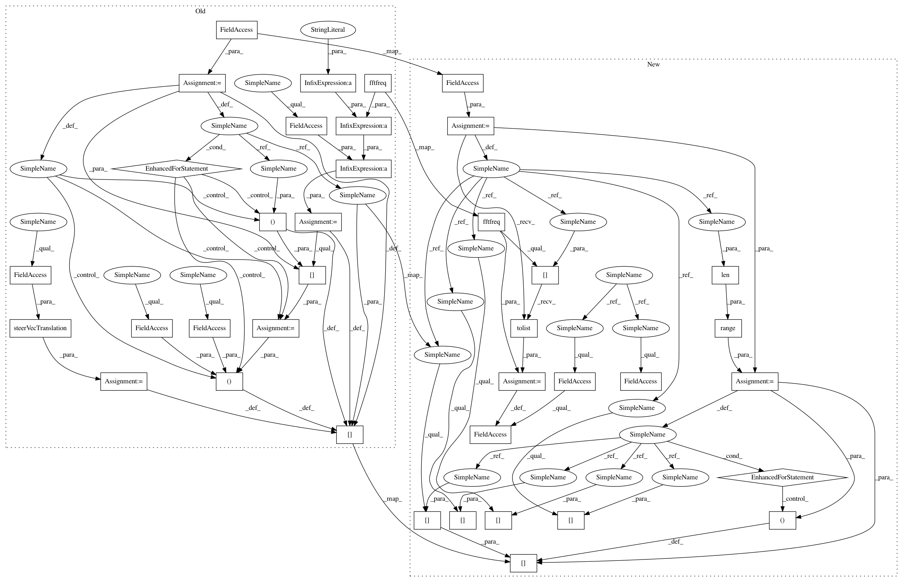

4b8dec5e7199ad302c52bf9eb6914a170491334c,acoular/fbeamform.py,BeamformerBase,calc,#BeamformerBase#Any#Any#,246
Before Change
-------
This method only returns values through the *ac* and *fr* parameters
kj = 2j*pi*self.freq_data.fftfreq()/self.c
steerVecFormulation = steerVecTranslation(self.steer)
normFactor = self.sig_loss_norm()
for i in self.freq_data.indices:
if not fr[i]:
csm = array(self.freq_data.csm[i][newaxis], dtype="complex128")
kji = kj[i, newaxis]
beamformerOutput = beamformerFreq(False, steerVecFormulation, self.r_diag, normFactor, (self.r0, self.rm, kji, csm))[0]
if self.r_diag: // set (unphysical) negative output values to 0
indNegSign = sign(beamformerOutput) < 0
beamformerOutput[indNegSign] = 0.0
ac[i] = beamformerOutput
fr[i] = True
def synthetic( self, f, num=0):
Evaluates the beamforming result for an arbitrary frequency band.
After Change
normFactor = self.r_diag_norm
return normFactor
def calc(self, ac, fr):
Calculates the delay-and-sum beamforming result for the frequencies
defined by :attr:`freq_data`
This is an internal helper function that is automatically called when
accessing the beamformer"s :attr:`result` or calling
its :meth:`synthetic` method.
Parameters
----------
ac : array of floats
This array of dimension ([number of frequencies]x[number of gridpoints])
is used as call-by-reference parameter and contains the calculated
value after calling this method.
fr : array of booleans
The entries of this [number of frequencies]-sized array are either
"True" (if the result for this frequency has already been calculated)
or "False" (for the frequencies where the result has yet to be calculated).
After the calculation at a certain frequency the value will be set
to "True"
Returns
-------
This method only returns values through the *ac* and *fr* parameters
i = self.freq_data.indices
self.steer_obj.f = (self.freq_data.fftfreq()[i]).tolist()
normFactor = self.sig_loss_norm()
for cntFreq in range(len(i)):
if not fr[i[cntFreq]]:
csm = array(self.freq_data.csm[i[cntFreq]][newaxis], dtype="complex128")
beamformerOutput = self.steer_obj._beamformerCall(cntFreq, self.r_diag, normFactor, (csm,))[0]
if self.r_diag: // set (unphysical) negative output values to 0
indNegSign = sign(beamformerOutput) < 0
beamformerOutput[indNegSign] = 0.0
ac[i[cntFreq]] = beamformerOutput
fr[i[cntFreq]] = True
def synthetic( self, f, num=0):
Evaluates the beamforming result for an arbitrary frequency band.
In pattern: SUPERPATTERN
Frequency: 4
Non-data size: 38
Instances
Project Name: acoular/acoular
Commit Name: 4b8dec5e7199ad302c52bf9eb6914a170491334c
Time: 2018-05-03
Author: tom.j.gensch@campus.tu-berlin.de
File Name: acoular/fbeamform.py
Class Name: BeamformerBase
Method Name: calc
Project Name: acoular/acoular
Commit Name: 276f8fc3fe9a7424bae6585ed4453190e2a70815
Time: 2018-05-02
Author: tom.j.gensch@campus.tu-berlin.de
File Name: acoular/fbeamform.py
Class Name: BeamformerCapon
Method Name: calc
Project Name: acoular/acoular
Commit Name: 4b8dec5e7199ad302c52bf9eb6914a170491334c
Time: 2018-05-03
Author: tom.j.gensch@campus.tu-berlin.de
File Name: acoular/fbeamform.py
Class Name: BeamformerBase
Method Name: calc
Project Name: acoular/acoular
Commit Name: 276f8fc3fe9a7424bae6585ed4453190e2a70815
Time: 2018-05-02
Author: tom.j.gensch@campus.tu-berlin.de
File Name: acoular/fbeamform.py
Class Name: BeamformerBase
Method Name: calc
Project Name: acoular/acoular
Commit Name: 4b8dec5e7199ad302c52bf9eb6914a170491334c
Time: 2018-05-03
Author: tom.j.gensch@campus.tu-berlin.de
File Name: acoular/fbeamform.py
Class Name: BeamformerCapon
Method Name: calc